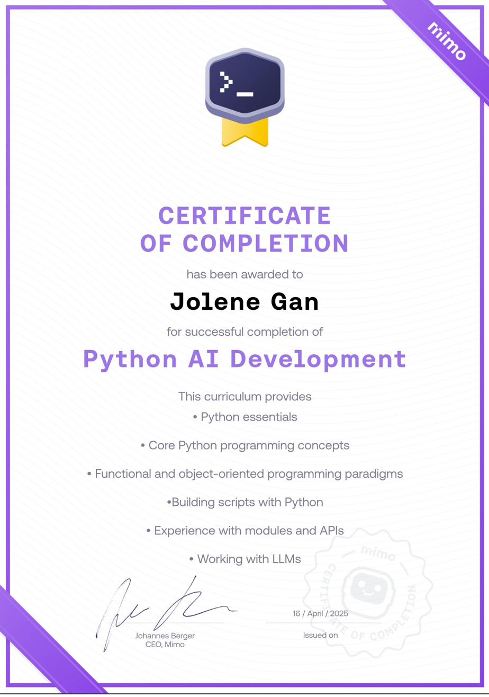
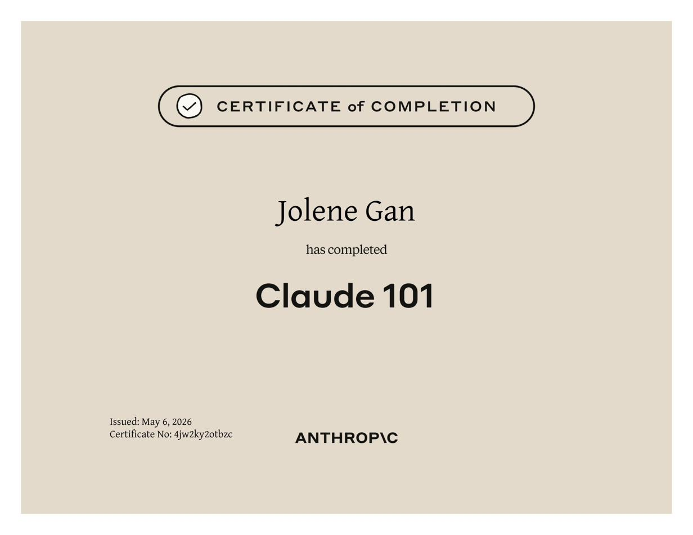
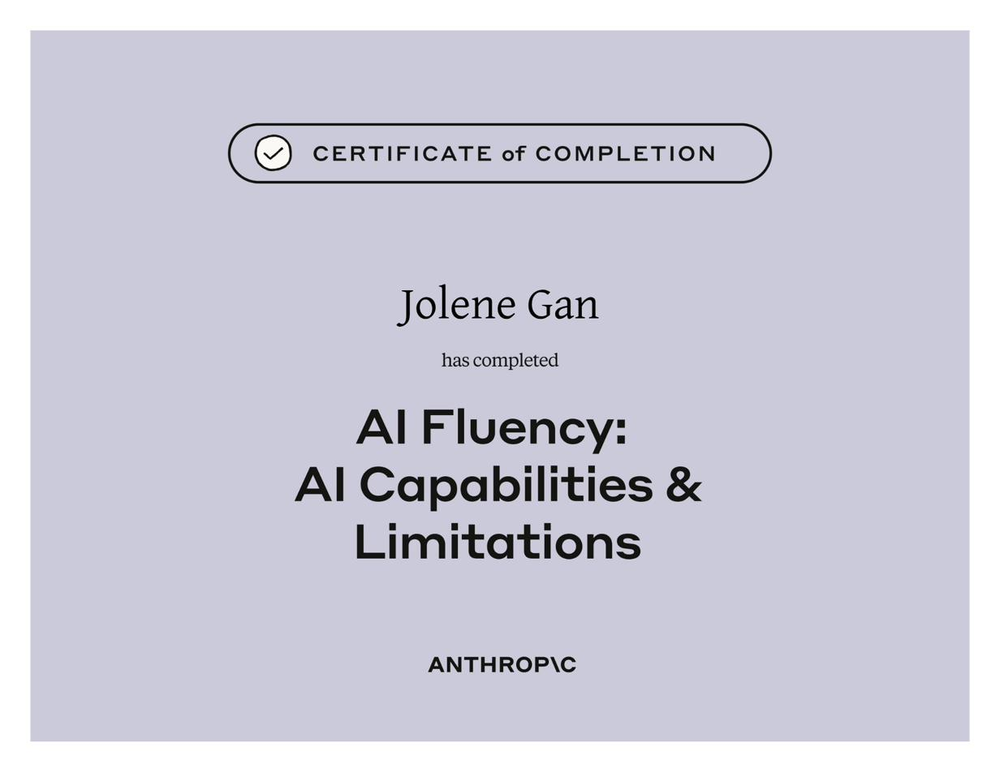
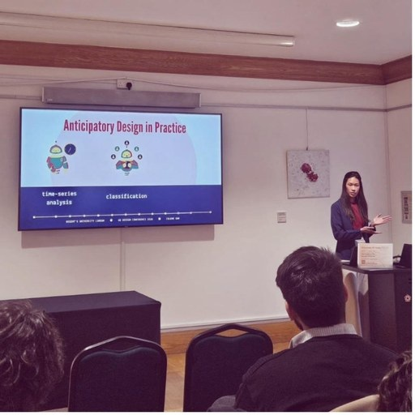
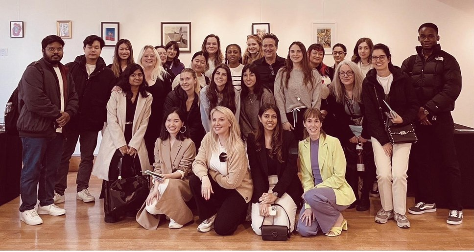
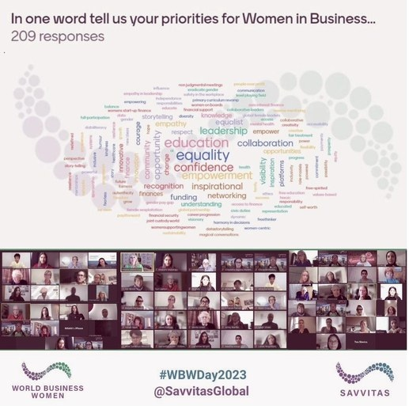

03 / Learning & Development
The learning
map.
An honest, ongoing record of every course, event, and credential - plotted by domain and difficulty.
Course Map
Each course is plotted by estimated difficulty (x-axis) and duration (y-axis), grouped by domain. Click any dot to see a brief summary below.
Courses
Completion certificates from courses, platforms, and professional learning programmes.

- Rules-based AI (logical rules), machine learning (data patterns)
- Discriminative AI, generative AI, deep learning and neural networks
- Supervised learning (labelled data), unsupervised learning (unlabelled data)
- Regression, classification, and clustering for prediction and grouping
- NLP, image recognition, and making complex predictions with large training datasets

- Generating charts (histograms, bar charts, lines/dots) with AI assistance
- Visual encoders: position, size, shapes, and colour
- Data storytelling: connecting context, visuals, narrative, and the problem statement
- Audience and tone considerations (executive vs social media)
- Using AI for faster data story crafting

- Using AI to uncover insights (conversion rates, written feedback analysis)
- Big data summary metrics and statistics
- Relative percentage difference (delta) between means for statistical confidence
- Calculating significance (p-value), accepting and rejecting hypotheses
- Calculating spread (variation) and range; handling GenAI risks including hallucinations

- Sets, lists, tuples for mutable and immutable collections, duplicates, and indexing
- Dictionaries: key-value pairs for data storage
- Higher-order functions, lambda expressions for compact anonymous functions
- Object-oriented programming: abstraction, inheritance, polymorphism, encapsulation
- Data hiding (protected and private attributes), name mangling for class safety


- len(), append(), insert(), pop() for sequence and list operations
- def for coding functions; dictionaries for associating meaning to values
- try, except, finally, and else blocks for exception handling
- self for accessing class variables and methods

- SUBSTRING, LOWER/UPPER, CONCAT, REPLACE for text manipulation
- CASE and WHEN for conditional value assignment
- AUTO_INCREMENT for unique primary keys; UNIQUE constraint for column distinctness
- ALTER TABLE / ADD COLUMN for structural table changes
- UNION vs UNION ALL to combine SELECT results with or without duplicates

- SELECT DISTINCT, filtering with comparison operators (IN, BETWEEN, AND, OR)
- ORDER BY ASC/DESC for sorting; GROUP BY with WHERE and HAVING
- COUNT DISTINCT, SUM, AVG for aggregation; AS for descriptive aliases
- INNER / RIGHT / LEFT / FULL OUTER JOIN ON for combining tables
- INSERT INTO, DELETE, FOREIGN KEY and REFERENCES for data and table management

- Statistical significance testing for A/B experiments
- p-values: probability values for determining if results are due to chance
- 5% industry standard threshold for statistical significance
- Using AI to calculate conversion rates and drive product improvement decisions

- Python: data type conversion, debugging, comparison/logical operations
- For/while loops, conditional statements, slicing and indexing with lists
- SQL aggregation: SUM(), AVG(), MIN(), MAX(); filtering with WHERE and HAVING
- ORDER BY, LIMIT, LIKE with % for sorting, limiting, and pattern matching
- Relational database concepts and SQL debugging

- Classical, empirical, and subjective probabilities for understanding uncertainty and prediction
- Probability trees, naive Bayes classification, binomials
- Q-Q (quantile-quantile) plots for distribution comparison
- Excel: NORM.DIST(), SDEV.P/S, VAR.P/S, RAND(), and NORM.INV() for statistical calculations

- Objects, vectors, functions, strings, and operators in R
- Packages: tidyverse, dplyr for data manipulation
- Reading .CSV spreadsheets; data wrangling (filter, transform, aggregate)
- Data visualisation with graphs in R
- Generative AI use cases in diagnostics, drug discovery, genomics, and personalised therapies
- Patient data privacy, regulatory frameworks, and ethical considerations in clinical AI
- Real-world applications across medical imaging, clinical decision support, and health system operations

- Data file formats, sources, and languages
- Relational databases (RDBMS), NoSQL, and ETL processes
- Data wrangling and data mining techniques
- Dashboarding, visualisation, and data storytelling

- Leveraging HandShake Analytics for dashboard creation and automated report scheduling
- Filtering, exporting, and customising reporting outputs for student placement tracking
- Applied to UKVI compliance monitoring and stakeholder-facing data products



- AI Fluency: Framework and Foundations (3 May 2026) - The 4D Framework: Delegation, Description, Discernment, Diligence. Generative AI fundamentals, effective prompting, and the Description-Discernment loop
- Claude 101 (6 May 2026) - Practical Claude usage: projects, artefacts, skills, connected tools, enterprise search, and Claude Code. Hands-on workflow integration across roles
- AI Capabilities and Limitations (9 May 2026) - A working mental model of generative AI behaviour: next-token prediction, knowledge, working memory, steerability, and what to do when properties collide
Events Attended
Open-access industry events, meetups, and conferences attended.
London, April 2026
April 2026: Data Decoded, AWS Summit, and Health and AI Tech Show
- Data Decoded (22-23 April) - data and AI conference bringing together practitioners, leaders, and researchers
- AWS Summit London (22 April) - Amazon Web Services annual developer and enterprise summit
- Health and AI Tech Show (29 April) - three co-located summits on AI in health, officially CPD-accredited; attended primarily for the Genomics, Biotech and Drug Discovery AI Summit, given a long-term interest in data science applications in personalised therapies and genomic science
London, 4-5 March 2026
London Tech Show 2026
The UK's leading B2B technology expo, bringing together 17,000+ industry leaders across AI, cloud, cybersecurity, and data. Co-located with Cloud Expo Europe, Data Centre World, DevOps Live, and Big Data and AI World at ExCeL London.
London, March 2025
London Tech and Data Event
- brand yourself - the importance of personal branding, visiting professorship by Thomas Finetto, Head of Creative (Meta)
- AI in real life - inference-centric AI development, codebase documentation best practices, open-source LLMs in paediatric health care
- stacked pathways - allies of women in data and analytics, best practices in the analytics engineering field


London, June 2024
The AI Summit London 2024
Attended as a student representative from Regent's University London. One of the world's leading applied AI events, bringing together enterprise leaders and practitioners exploring commercial AI applications.


London, March 2024
Tech Show London 2024
Attended at the ExCeL London, encompassing Cloud Expo Europe, DevOps Live, Big Data and AI World, and Data Centre World. Attended as a student from Regent's University London. 8 CPD credits earned.
Dates, photos, and descriptions to be added for April 2026 events. All events grouped by month.
Private Invitations
Exclusive, invitation-only industry events and closed-cohort sessions.
London, March - April 2026
Claude Code Community London
Invitation-only series of four sessions hosted by Anthropic in London, Spring 2026.
- Claude for Voice (27 March 2026) - applying AI to voice-powered products
- Claude for Designers (1 April 2026) - AI workflows for UX/UI designers
- CCCL No. 5: Claude for Everyone (7 April 2026) - talks on predictive AI tools, AI risk platforms, and practical Claude Code applications across industries
- Claude for Everyone (24 April 2026) - demos, lightning talks, and hands-on help desks

London, 24 March 2026
UX Design Conference 2026
Invited to speak for the second consecutive year. Delivered a talk titled "Predictive, data-driven systems in real-world UX design", exploring how data science and predictive modelling can enhance user experience research and product development.


London, April 2025
UX Design Conference 2025
🏆 best presentation awardInvited to speak on the intersection of data science and UX design. Delivered a talk titled "Supercharging UX Design with Data Science".
- The role of data science in UX design
- Reinforcement learning as a machine learning method for better UX research
- Using data from user behaviour for improved product development
London, October 2024
Google Careers Day
Hosted by Luna Yang as part of the Google Asian Network. Selected as one of 20 university students to participate in this invitation-only careers day at the Google London office.
- featured talks - self-achievement, innovation and diversity at Google, AI (Gemini)
- training - careers and interview coaching
- Google office tour and networking
London, July 2024
DIFoR - Data Innovation for Future of Regulation
A Financial Conduct Authority (FCA) data strategy and services conference at the FCA Building, London. Two-day invitation-only event at the intersection of financial regulation and data innovation.
- Keynote: "Threading data into ambitious policy ideations" (Danish FSA)
- Panel: Navigating the climate data dilemma (Deutsche Bundesbank)
- Speaker: Data Strategy at the Bank of England (James Benford)
- TED Talks: Invisible digital infrastructure, Impact of quantum computing on security and regulation
- Panel: Celebrating young innovators - the future of finance (FCA)


London, 16 April 2024
UX Design Conference 2024
A Regent's University London event.
- Addressing the intersection of UX design and learning analytics
- Importance of design in data visualisation
- Use of AI in UX and product design

Virtual, October 2023
World Business Women Day 2023
A Savvitas Global event. Private invitation from Helene Gee (founder).